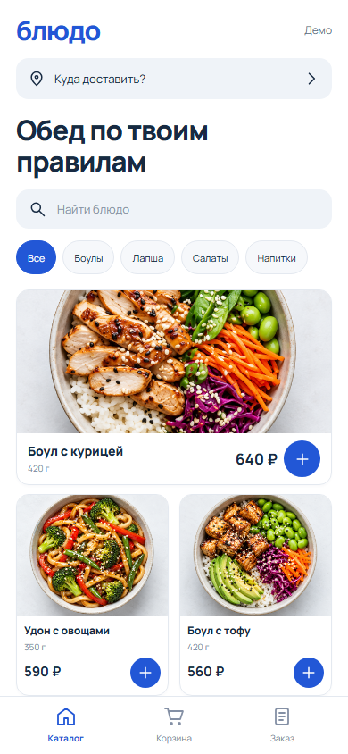
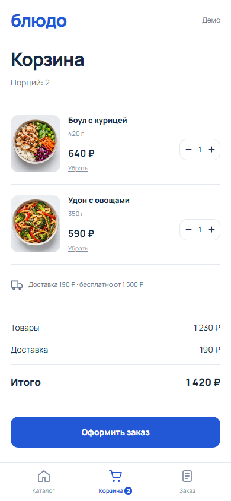
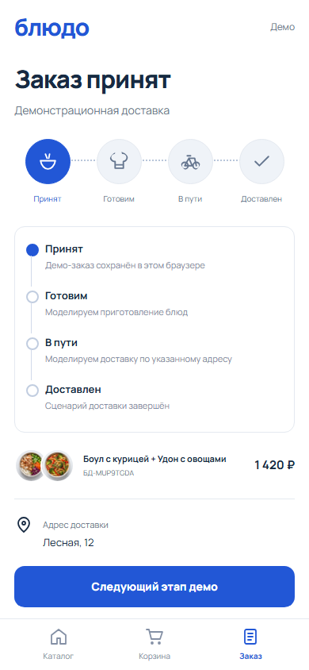
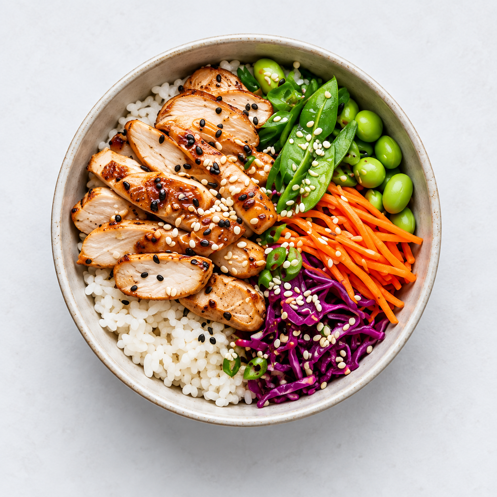
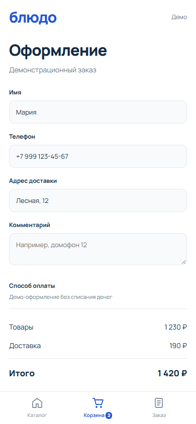

Что внутри блюда?
Фотография, вес, цена и состав. Поиск по названию и ингредиентам, четыре категории меню.
09 / Mobile UI · PWA · Модельный бриф
«Блюдо» — мобильное приложение доставки еды. Короткий путь от выбора блюда до понятного статуса заказа.
Открыть приложение ↗


Задача → решение
Фотография, вес, цена и состав. Поиск по названию и ингредиентам, четыре категории меню.
Количество порций, стоимость блюд и доставки раздельно. Тариф: 190 ₽, бесплатно от 1 500 ₽.
Четыре этапа с понятными подписями. Корзина и последний демо-заказ сохраняются при перезагрузке.
Визуальная система
Белый фон, насыщенный синий, крупная типографика и спокойные линейные иконки. Фотографии созданы отдельно; кнопки и текст — настоящие элементы интерфейса.

Полный сценарий

Проект портфолио: цены модельные. Оформление локальное, без оплаты и отправки в ресторан. Этапы переключаются вручную. Это PWA-прототип, не Android APK или iOS-приложение.
Проверить сценарий самому ↗